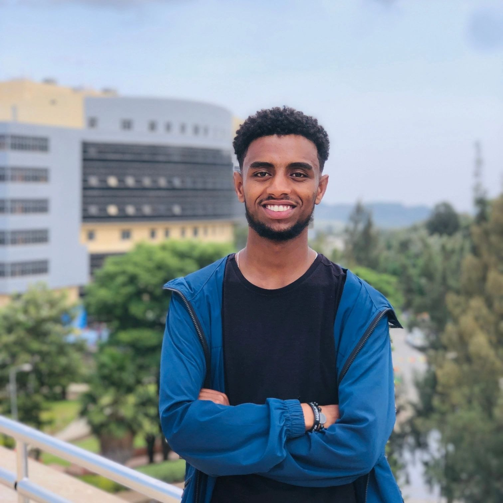

Documentary Event and Travel Photographer
Film & TV Production Student, University of Gondar
Gondar · Addis Ababa · Ethiopia
I am a passionate street and documentary photographer who began photography at a young age, first using my phone to capture real life as I saw it people, daily moments, and sometimes nature.
What truly draws me is its honesty. I am deeply connected to the culture, the people, and the way faith and everyday life are lived it is what drives me to document real, unstaged moments.
I have always been more interested in truth than in perfection, and this interest has deepened over time. I am currently a Film and TV Production student at the University of Gondar, and studying cinema has shaped the way I see photography, especially in storytelling, light, and composition.
My most significant project to date was participation in the Everyday Elsewhere exchange between Addis Ababa and Weimar, Germany work that was exhibited internationally and published in print and digital media.
My relationship with photography began in Grade 10 when I got my first phone. At that time, I didn't really see it as photography yet I was just curious and enjoyed capturing what I saw around me. I began by capturing nature in and around my village, especially a forest and a spring I often visited.
Over time, I started to explore more than just nature. I became more interested in real stories happening around me rather than just beautiful scenes. Without realising it, photography became a way for me to see life differently and to tell stories through images.
I am a storyteller with a deep love for my culture. I'm always eager to learn new things, and I can be a bit shy when it comes to communication. I naturally prefer staying quiet, observing my surroundings, and capturing moments I can turn into stories through photography.
However, I've realised that communication is also very important, especially as a photographer who works with people. I've started improving my communication skills step by step I'm still growing in that area, but I'm becoming more confident over time.
My home, my surroundings, and the people around me. I'm drawn to everyday life their stories, struggles, and joyful moments. I also find inspiration in the unnoticed parts of life, because there is always a story to tell and a truth to capture.
I use my images to connect with others through honesty. When people see my photos, they can relate them to their own lives and surroundings. I focus on capturing real moments so viewers can see their own stories reflected in them.
One way I've had it hard as a photographer is working in street photography environments. When people see a camera, they don't always feel comfortable. Many don't want their photos taken or shared, and this makes it difficult to capture real moments freely. Sometimes photography is not easily accepted, and even being seen taking photos can lead to questions or restrictions.
From this experience, I've learned how important it is to be observant, responsible, and adaptable. Even with these challenges, I continue to try to document real life and tell stories carefully and respectfully.
I am focused on capturing real moments as they naturally happen, with a strong storytelling perspective. I mainly work with natural light and take time to observe scenes before capturing them, looking for timing, emotion, and composition that feel honest and authentic.
Coming from a film and TV production background, I often think in a more cinematic way framing images as part of a larger story rather than just single moments. I pay close attention to details, light, and atmosphere to create images that feel real, emotional, and narrative-driven.
Cultural integrity is the one standard I never compromise on. Whether I'm in a rural village or a busy city, I make sure I approach every tradition and every person with honesty and care. I'm very careful to never misrepresent our way of life or show anything out of context.
To me, a successful photograph isn't just about lighting or composition it's about the respect shown to the culture and the community within that frame.
The way he tells the stories of rural Ethiopia is so authentic capturing life exactly as it is, in a way that feels incredibly meaningful.
His work has shaped how I approach photography, especially in how I see our culture and environment.
Studying film and TV production has shaped how I see photography particularly in storytelling, light, and composition.
"What makes the work coming out of Ethiopia so strong right now is that it's being made by people who actually live these stories. We have a deep, natural connection to our environment and our people."
Yonatan Nigussie